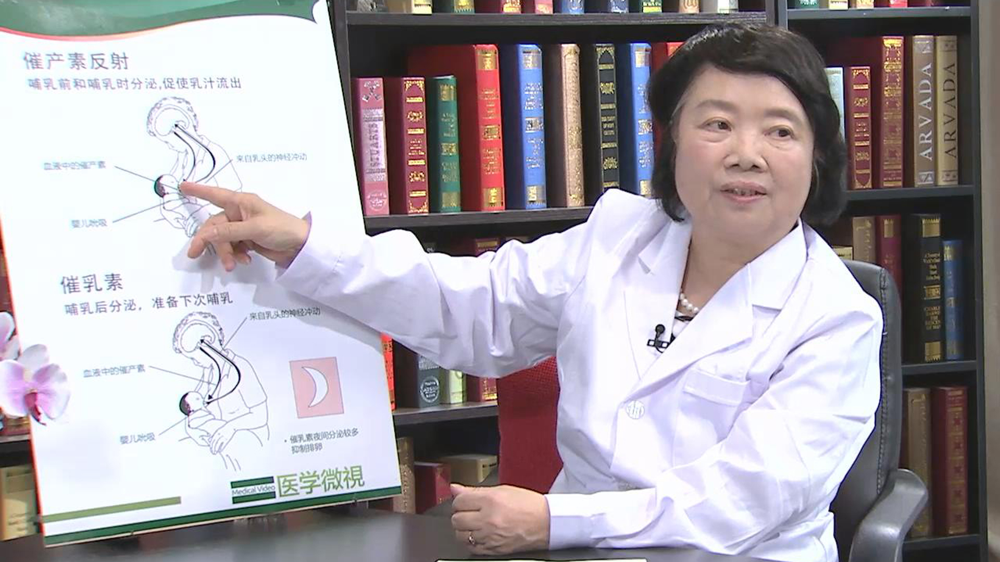

1.58 母乳喂养¶
戴耀华 主任医师¶

世界卫生组织儿童卫生合作中心主任 研究员 博士生导师 享受国务院政府特殊津贴；
中华预防医学会儿童保健分会主任委员；中国妇幼保健协会常委兼儿童早期发展专业委员会主任委员；北京优生优育与妇幼保健协会副会长；世界卫生组织儿童和青少年卫生和发展专家执委会成员；《中国妇幼健康研究》副主编；《中国儿童保健杂志》副主任编委。
主要成就：
目前承担的科研课题主要有卫生部、世界卫生组织、联合国儿童基金会的合作科题，如“儿童疾病综合管理”“儿童喂养和营养”“儿童早期综合发展”及“儿童铅暴露防治”等，发表几十篇论文； 主编或参加编写了《儿童疾病综合管理》《儿童少年卫生与妇幼保健学》《儿童保健学》等10多部专著及多本科普读物。
为什么说母乳最适合婴儿生长发育？¶
我们应该说人类几千年的历史，就是母乳喂养的历史，如果没有母乳，就没有我们人类的繁衍生存，所以母乳有什么好处呢，我们想从几个方面来讲母乳喂养的好处:
首先人要生存，肯定要靠营养，所以母乳的营养，它是最适合我们婴儿生长发育的，也就是母乳里的营养最全面，这是我们人类几千年来遗传所造成的，母乳里有哪些营养呢?
首先我们需要的一些宏量营养素，蛋白质，最重要的，母乳里的蛋白都叫乳清蛋白，乳清蛋白它占80%左右，容易消化吸收，而且还可以有防止细菌感染的作用，我们说牛奶，也可以吃，但牛奶里面的蛋白它是叫酪蛋白，这个蛋白大量的在牛奶里面，这种蛋白的分子比较大，不容易消化吸收，而且它也不能保护孩子免受细菌的感染。
另外我们知道酪蛋白的分子比较大，所以小婴儿吃了以后，就容易造成过敏，所以为什么很多吃奶粉的，吃牛奶的孩子，有湿疹呢，以后可能会是过敏的体质，从蛋白来讲是这样。
我们讲人的生长发育，特别大脑的发育，是需要脂肪的，那么母乳里的脂肪，我们叫不饱和脂肪酸，譬如DHA，大脑的发育需要这种DHA，母乳里很多，所以我们的孩子吃母乳以后，大脑发育也比较好。
另外当然我们还需要像碳水化合物，也就是糖，母乳里的乳糖也非常好。
所以除了这种大的营养素以外，母乳里还有很多微营养素，我们叫微量营养素，比如说维生素，各种各样的维生素，还有微量元素，微量元素包括大家都知道锌、铁等等，如果没有这些元素，孩子的生长发育受影响，特别大家知道铁，如果孩子缺铁的话，就会贫血，贫血的孩子就会影响生长发育，特别影响到脑的发育。
另外缺铁的孩子他的抵抗力也弱，所以说我们说母乳里的营养搭配，就这些维生素，微量元素，宏量营养素，它的比例，它的搭配，是最符合我们小婴儿生长发育需要的。
母乳喂养的婴儿为什么会生病少？¶
大家知道，吃母乳的孩子，我们提倡是零到六个月纯母乳喂养，什么叫纯母乳喂养，就是光吃妈妈的奶，连水都不用喝，因为我们母乳里有百分之七八十的是水，所以按照纯母乳喂养，就是水也够了，营养也够了，为什么我们要提倡纯母乳喂养，零到六个月纯母乳喂养，因为我们的母乳里边有很多，我们叫它免疫因子，就是防止孩子生病的，所以吃纯母乳的孩子，可能六个月之内很少生病。
当然了，还有母传抗体，就是在怀孕的时候，通过胎盘给孩子的一些抗体，另外在奶里有这些抗体，就是母亲平时生病，获得的抗体，在奶里边都有，所以它可以保护孩子，在六个月之内，很少受到感染，不管是呼吸道感染也好，消化道感染，譬如腹泻等等这些事情。
那么另外（母乳）它有很多抗体，就是我们叫它免疫球蛋白，免疫球蛋白，分泌性的免疫球蛋白，比如IgA了，IgG了，还有其它的抗体，除了抗体以外，母乳里面还有很多，我们说它叫细胞免疫，就是T细胞，这些细胞的东西也有。
另外还有母乳是有菌的，母乳不是无菌的，什么菌的，它好的菌，叫益生菌，比如说乳酸杆菌，双歧杆菌，还有这些菌它就是也能抵御其它的一些细菌的感染，所以现在最新的概念论文，母乳喂养的孩子，和奶粉喂养的孩子，他的肠道菌群是不一样的，肠道菌群的种植不一样，母乳喂养的孩子，他种植的肠道菌群叫益生菌，都是好的细菌。
所以那些有害的细菌，就不能在肠道种植，所以为什么母乳喂养的孩子，他的腹泻等等，别的病也都少，一些肠道菌群这块研究也很多，母乳喂养的孩子，和非母乳喂养的孩子，他的肠道菌群是不一样的。
当然还有其它一些（菌群），我们叫它双歧杆菌，双歧因子，还有益生元，有利于益生菌生长的那些东西，譬如糖类，寡糖、多糖等等，它都有利于益生菌的生长。
所以现在对母乳的研究非常多，但是还远远没有完，母乳为什么能保护孩子，在六个月之内很少生病，所以我们说母乳喂养对孩子是一个很好的免疫保护，也有人说，母乳喂养，特别是初乳喂的时候，等于是孩子的第一次的免疫接种，很多抗体都给了孩子了。
母乳喂养会影响孩子终生的健康吗？¶
你这个说的对了，母乳喂养的孩子，和奶粉喂养的孩子，他的肠道菌群是不一样的，肠道菌群的种植不一样，母乳喂养的孩子，他种植的肠道菌群叫益生菌，都是好的细菌，所以那些有害的细菌，就不能在肠道种植，所以为什么母乳喂养的孩子，他的腹泻等等，别的病也都少，一些肠道菌群这块研究也很多，母乳喂养的孩子，和非母乳喂养的孩子，他的肠道菌群是不一样的。
我们说细菌的种植，最早在你肠道里种长的，也就是定着，是什么样的菌，如果是我们都是益生菌，有益的菌的话，有害的菌是不是就种不上去了，而且这种菌的种植，不是说短期的保护孩子，它跟孩子的终生的健康都有关系，我们知道现在人到了中老年，得了一些慢性病，实际上也跟肠道菌群有关，就跟你（是）孩子时候的肠道菌群什么样的，一直有关系。
当然了，这种菌以后也会有变化，比如说我们孩子六个月以后要吃辅食了，辅食添加以后，可能菌的种类会多一点，我们现在正在研究这些，也有一些结果了，所以母乳喂养它有很多的好处，不是说大家现在研究的一些结果，远远超过我们预期的认为的一些结果。
母乳喂养也会密切母子感情吗？¶
母乳其它的好处，大家也知道，以前很少大家会想到这块，就是母乳喂养，可以密切亲子关系，母子感情，我们叫亲子关系，最好的就是从母乳喂养开始，因为这种亲子关系，关系到孩子以后的安全感，亲子关系差的孩子，他以后可能会有很多行为问题，比如说有的孩子有攻击行为，暴力行为，或者其它（问题），到青少年时候犯罪，它都跟亲子关系有一定的联系，所以我们说母乳喂养是最好的维系母子感情，可能以前大家在这一方面想的不多。
所以喂奶的时候，是母亲和孩子交流最好的时候，所以母亲喂奶的时候，眼睛要看着孩子，而且要跟孩子聊天，中国也有一句话，叫有奶便是娘，喂了奶了，那个母亲才真正的负起自己的责任，所以这是另外个好处。
母乳喂养对产妇自己有哪些好处？¶
除了对儿童的好处，对妈妈自身也有好处，当孩子吸吮的时候，母亲的子宫会收缩，这样恶露会排出，就是刚生完孩子有些恶露，可以促进排净，从长远的效果来说，还可以预防卵巢癌和乳腺癌，所以乳腺癌和卵巢癌的一个保护因素，也是母乳喂养，如果生了孩子不喂奶，那就是乳腺癌和卵巢癌的危险因素，所以对母亲也有很多好处。
另外一个好处大家知道，在母乳喂养期间，母亲可能很少排卵，那么这样就延长了生育间隔，自然的计划生育，我们现在不是可以生二孩吗，所以两个孩子时间的间隔可以延长，这是天然的一个避孕吧。
母乳是怎么产生的？¶
母乳怎么产生的，我们这儿有一张乳房的解剖图，我们知道在母乳里面，它有很多泌乳的细胞，那么这些泌乳细胞泌乳以后，它通过这个导管，通过这些导管，收集了这个（乳汁），它就到了我们这个地方，比较大的地方，叫乳窦，乳窦在什么下面呢，在这个，从外面看来是乳晕，这个我们叫它乳窦，这个大的乳窦，乳窦在什么地方，就在这个乳晕下面，乳晕我们没标出来，但是大家知道，这个黑色的地方是乳晕。
所以当孩子吸乳头的时候，我们知道乳头上有很多末梢神经，孩子吸的时候，末梢神经就等于刺激它了，这种神经，我们就传入神经，就传到大脑，大脑就会分泌催乳素，催产素，然后促进乳腺周围的肌细胞等等收缩，来分泌乳汁，我们在含接乳头的时候，一定要含到乳晕部分，因为乳晕底下才是乳窦，乳头上面没有乳汁。
所以有的人老吸乳头，不吸到乳晕部分，这个乳头吸破了也是没有奶的，所以必须把大部分的乳晕都含进去，这样压迫乳晕，就是乳窦里的这个奶通过一些导管就出来了，就分泌出来了，所以我们说这个就是一个乳房产生母乳的一个机制。
如何才能让产妇的母乳多一些？¶
我们知道有一些神经反射，神经反射，首先我们还是有根反射，就是当母亲的乳头触及孩子的嘴的时候，那么我们孩子的嘴就张大，所以他就产生一个吸吮动作，吸吮动作，这个动作通过传入神经，我们不是说乳头这儿有很多末梢神经吗，通过传入神经传到大脑，大脑就分泌什么，催产素，使用传出神经传出来，就让妈妈的乳腺就开始分泌乳汁了，最关键的，我们知道要有一个刺激，这个刺激就是孩子的吸吮刺激，才能产生奶。
所以有人说，用什么汤，用鸡汤、鸭汤可以催乳，但实际上我们说最重要的是一个刺激，吸吮刺激，所以要让妈妈的奶多，唯一的办法，就是让孩子不断的吸吮，这种吸吮刺激，神经才知道，大脑知道，传进去，说这孩子要吃奶了，就分泌奶了。
所以有人说，这个孩子的吸吮，他吸吮的多怎么样，乳汁就多，如果是双胞胎的话怎么样，两个孩子同时吸两个奶的话，它是不是也够，所以它因为吸吮刺激，所以两个乳房同时泌乳，同时泌乳的话，它的乳汁也够的，所以大家说为什么人有两个乳房，就是可以供双胞胎，所以不光这个孩子够，两个孩子都够，所以孩子的吸吮刺激，就决定了妈的产的奶量，孩子想吃多少，妈的奶就会有多少。
产后头七天的初乳会足够婴儿吃吗？¶
我们刚开始的时候，我们叫它初乳，头七天之内我们都叫初乳，孩子吸吮的时候，妈的乳汁分泌，很多人就怕初乳不够，觉得初乳那么点够吗，孩子刚生下来，他的胃才有多大。
（采访）多大呢？
我们叫小弹子珠那样，五公分左右，所以我们要求孩子每天至少吸八次奶，这样才能吃饱，如果他的胃是五毫升，他吃八次他要吃到多少奶，五八四十毫升，所以一天的初乳就能分泌到四十毫升左右，所以我们不要怕初乳不够，很多人以为孩子生下来，奶不够，要给他喝水了，给他吃配方奶粉了，这都不对的，必须让孩子吸吮，这样妈的奶才能下来。
实际上这个乳汁在没生孩子之前，已经有了，已经在乳房里面，只要孩子吸出来，它不是自来水，开水龙头开出来的吗，必须用孩子的嘴巴吸，我不是刚刚说了吗，一开始他的胃很小，一天四十毫升就够了，初乳是完全够的，但你如果不让吸了，你给他喝了糖水，喝了配方奶粉，这孩子吸吮少了，那奶就分泌少了，关键的让孩子吸吮，都会有奶的，90%以上的母亲都是可以喂奶的。
母乳喂养的婴儿夜里喂奶好吗？¶
我们还有一个叫催乳素，孩子吸吮的时候，这种刺激，从传入神经传到大脑，大脑从传出神经传到乳腺，让乳腺分泌奶，这个就是催乳激素要分泌，通过神经分泌催乳素。
另外一个我们要知道，催乳素在夜里分泌最多，激素在夜里分泌最多，刚生下来的孩子，夜里是要喂奶的，夜里喂奶，她的催乳素多，她的奶量也多，所以这个小孩在夜里，他也要吃奶。很多人夜里要睡觉，就是怕累，不给孩子吃奶，这是不对的。
所以特别夜间也要喂奶，这样的话，她的催乳素分泌更多，所以我们说这就是我们奶的分泌机制，从这个就知道，必须有一个刺激，最重要的刺激就是孩子的嘴巴的吸吮刺激，也不用吸奶器，也不用喝什么汤能够达到的，最关键我们就知道母亲，不断的让孩子吸吮，要知道这个原理。
成功母乳喂养有哪几个要点？¶
怎么成功母乳喂养，我们说有几个要点：
一个就是要早开奶，生下一个小时，孩子生了一个小时，有三早，我们叫早接触，早开奶，早吸吮，要让孩子早吸吮，早接触，早开奶，皮肤的接触，所以我们现在很多医院都是爱婴医院，都有这规定，孩子一生下来一个小时，必须放到妈胸前，让他接触，让他早吸吮，这个是关键。
第二个，就是吸的对不对，吸在什么地方，哺乳的姿势很重要，哺乳我们说有一些要求的，比如抱了孩子以后，孩子面对母亲，而且孩子整个的身体要在一条直线上，孩子的脸要对着妈妈，他的整个身体都对着母亲，他的下巴得贴近乳房，抱的姿势很重要。
下面一个姿势，就是抱好以后，含的姿势也非常重要，怎么来含接乳房，含接到什么地方，我们说了，孩子有个根反射，乳房刺激他，他就嘴巴长大，他应该含到哪儿，含到乳晕部分，把乳晕部分都含进去，因为乳晕底下是乳窦，压迫乳窦，奶才能出来，不是吸乳头，那个乳头吸破了，奶也出不来，所以我们说含接很重要。
首先孩子的嘴巴张大，大部分乳晕都应该吸进去，孩子的下巴呢，应该贴近乳房，孩子的下巴贴近乳房，所以有些抱的姿势，这是看不太清，就还是嘴巴张大，下巴贴近乳房，鼻子基本上对着乳头，大部分乳晕都得吸进去，另外下嘴唇向前，向外翻出来，像鱼唇一样，如果下唇收了，那就嘴巴小了。
还有一个就是，我们要从外面看，就是上面的乳晕，就是嘴上面的乳晕比嘴下面的多，就是嘴下面基本看不见（乳晕），这样含接对了以后，才能正确的吸吮，奶才能出来，要不光吸个乳头就不行，所以有人害怕，说乳房内陷了，有的人的乳头内陷了，说他能吸出来吗，当然我们一个是在准备怀孕的时候，准备哺乳，经常要把那个乳头牵引一下。
但是很重要的要含到乳晕的部分，那样问题就不是太大，不要害怕这个事情，有人说乳头内陷是不是不能喂奶了，实际上不是，因为我们要含到乳晕部分，这是第二个关键，就是抱的姿势，含接的姿势，这样正确的吸吮。
还有一个，这跟母亲心情也有关系，如果母亲睡觉少了，累了，她可能也会影响到乳汁的分泌，所以母亲要保持一种非常轻松的心情，有了孩子应该非常愉快的，很幸福的，保持这么一种心情的话，也会促进乳汁分泌，如果母亲老是抑郁，有的有产后抑郁，这个也要找医生咨询，有些母亲给孩子吸吮不够，不够的话，她的奶量，也影响到奶量的分泌，所以这些都是我们认为就是要成功的一个因素。
当然了，在这个喂养当中，家庭的支持很重要，特别是父亲的支持，母亲生了孩子了，父亲就应该多做点家务了，不要再让母亲太劳累，其它家庭成员也很重要，有的时候有的父亲会说，烦死了，吃奶粉吧，实际上我们知道，吃配方奶粉有很多问题的，不是说为了方便，为了母亲不受累，有人就说，白天喂母奶，晚上喂配方奶粉，让母亲睡觉，这些都是不正确的。
所以我们说家庭成员要支持母亲，不能说烦死了，累死了，干脆放弃母乳喂养，所以我们说家庭成员的支持，也非常重要。
婴儿出生后就有吸乳和消化母乳的能力吗？¶
正常的孩子，我们说不是说早产的，有的有病的，早产的人不算，有些早产的孩子，他可能还没有吸吮的能力，所以他要放在孵箱里面，要用鼻饲打进去。
那么一般正常的孩子，他都有这种吸吮能力，我们说他主动的一些条件反射，非条件反射，根反射，乳头一刺激孩子的嘴，嘴就张大了，他就含乳房了，另外他有什么，有吸吮反射，他一接触到乳房他就吸了，嘴巴就吸了，还有一个嘴巴吸完奶以后，嘴巴里全是奶以后会怎么，我们叫它吞咽反射，他就吞进去了，所以这都是人类天生具有的这种反射，所以他都会吸奶，没有一个孩子生下来不会吸奶的，除非我说了早产儿，生的太早了，还没有吸收能力，或者有病的孩子，一般正常的孩子都有这个能力。
而且我们知道，母乳里面蛋白质，我们是乳清蛋白，这种蛋白容易消化吸收，我们的酶早就有了，就这些消化酶是储备的，所以孩子吃了（母乳）以后，他就会消化，我们的淀粉酶，可能会稍晚一点，淀粉酶，我们到六个月以后才添加辅食，才加淀粉酶的食物。
所以它的酶，就是各种各样的消化酶，也是随着孩子吃什么东西，一个诱导它产生，一个就天生存在了，有这种消化酶，就能消化吸收这种乳汁，牛奶里面它的酪蛋白分子比较大，所以孩子的消化吸收就不太容易，有的孩子可能还会腹泻，就拉肚子等等，有的孩子因为用了这种大分子的蛋白以后，他就产生了过敏，大分子异体蛋白的一个刺激，就让孩子成为一种过敏体质。
当然跟肠道菌群有关，所以过敏跟肠道菌群也是有关，很多人说过敏怎么来预防，就不光是用大分子的一种蛋白，另外一个就是，肠道菌群的进来很有关系，所以很多过敏性的疾病，我们现在主张用益生菌来治疗，等大了以后，很多有过敏疾病的人，孩子，都是用益生菌来替换肠道那些有害的菌。
孕产妇缺乏营养素对孩子发育有哪些影响？¶
我还要着重的讲一下，母亲在哺乳期的营养。我们现在知道在孕期，怀孕的妇女要服叶酸，就是孕前三个月，孕后三个月，要服六个月的叶酸，叶酸是为什么要服，叶酸是一种维生素，它就是预防我们叫神经管畸形，预防出生缺陷，无脑儿，脊柱裂，像这种孩子，大家知道，用叶酸来预防，我们国家，我们的政府，已经是对所有的孕妇都免费的服叶酸，服六个月，但是往往就是孕前三个月，可能大家不知道，不知道什么时候怀孕了，孕前三个月，所以准备怀孕的时候，实际上就应该服用叶酸。
那么我们也知道，很多其它的病，不光是缺乏叶酸，比如现在大家知道自闭症，孤独症的孩子，现在日本人的研究认为，跟母亲怀孕的时候，缺少某些营养有关，但是还没具体到什么营养素，反正缺乏一些营养，所以他生下来，就是这种孩子，我们叫它功能性紊乱，就是大脑发育，功能性大脑发育缺乏这种的营养素，他生下以后，就成自闭症了，也叫孤独症了。
所以我们现在国家批准了一种营养包，孕妇营养包，就是多种营养素的，里面有多种维生素，矿物质，怀孕以后就可以服用，会预防很多疾病，当然我们不知道，自闭症到底跟哪些营养素有关，如果通过这种多种营养素的服用，能够预防这种疾病不是很好吗。
所以母亲怀孕的时候，可能会有一些早期有妊娠反应，吐啊，或者有的挑食，偏食等等，在这种时候，还是要尽量的要保持我们的营养均衡，你平时吃什么，我们说动物性的食物，鸡鸭鱼肉，碳水化合物，包括米啊、饭啊等等，面条还应该吃。
有很多我们的女青年，为了减肥（节食），减肥你不怀孩子的时候可以，等你怀上孩子了不能减肥了，我们说食物多样化，营养的均衡，这一点对妈妈来说也很重要。
生了孩子以后，为了保持你的乳汁分泌的比较好，也需要这些营养，我们说两个人吃饭了，不是一个人了，我们也已经研发了叫乳母营养包，就是喂奶的时候也有这种营养包，当然我们还是希望通过天然的食物，各种各样的食物都能吃，食物的多样化，特别是动物性的食物。
那么我们知道，在生了孩子以后，牛奶、鸡蛋了，鸡鸭鱼肉了，这些饭，面条，都不能省，应该是吃饱，有的妈妈说，我别吃得太胖了，不会的，我们母乳喂养的孩子，一个很好的好处，就是能够让母亲的体型很快恢复，就恢复体型，所以很多母乳喂养的母亲的体型恢复得很快，所以她把怀孕的时候储存的营养，会都通过母乳给了孩子，所以母亲的饮食营养，也是很重要的一个方面。
所谓营养均衡，就是食物要多样化，不是某一种食物吃得特别多，有人生了孩子，一天吃十来个鸡蛋，喝好多，那是不行的，我们要均衡，就各种各样的食物都要吃，蔬菜、水果也得吃，不能光是为了营养，不能光靠鸡蛋，但是除了鸡蛋以外，肉啊，鱼啊，这些都很好，特别鱼，我们说母亲的奶里有DHA，这种DHA很多也是从鱼里得到，所以我们说营养的均衡，膳食的平衡，这个非常重要，你哺乳的时候应该哪些食物，怀孕的人应该吃哪些食物，有一个《中国居民膳食指南》，可以参考一下那个书。
母乳喂养后每次都要清洗乳头吗？¶
现在当然跟过去不完全相同，有一些知识更新的方面，我想说一下，过去认为每次喂奶，都得洗乳头，实际上现在认为不必要，就是喂奶的时候，你可以在乳头上留一点乳汁，保护一下乳头，但是不主张每次都用肥皂洗，用清水洗，这样反而不好，容易引起乳头的皲裂，把油渍都洗掉了。
当然怀孕的时候，我们也要穿一些合适的衣服，比较宽松的，用的胸罩要宽一点，别勒得很紧，当然清洁卫生很重要，在没生孩子之前，怀孕期间，你可以清洁一下乳房，稍微给它清洗清洗等等，但是在哺乳期间，不要求每次哺乳都清洗，这样反而使得乳头皲裂了，所以我们说，关键是衣服要选择，别再带腰身的了，就宽大的，孕妇服，乳罩、胸罩什么的都要比较宽松，另外一个质地很重要，最好是棉的，棉的，柔软的。
孕产妇还可以化妆吗？¶
我说怀孕以后就别化妆了，特别是口红，看着挺红的，但是越是鲜艳的化妆品里面，肯定要有一些铅，否则不会那么鲜艳，我曾经碰到一个小孩，五岁了，她铅比较高，学习成绩也不好，最后一查，她的血铅高。
就问了，这个女孩子怎么会血铅高，她姑姑带着来的，跟我说她把她妈的口红都用光了，就是在怀孕以后就不要再化妆了，当然有一些主持人，演员了，好像必须化妆，但是还是要避免这些，中国有一句话叫洗尽铅华，说明化妆品里还是有一定的铅的，所以我们最好不要化妆。
产后母婴同室越早越好吗？¶
对，所以在医院里面，在产房一出来，就给你同室了，我们叫母婴同室，这是爱婴医院的一个起码的要求，所以所有的爱婴医院都要求母婴同室，母婴同室方便母亲喂奶。
实际上母亲是对孩子最好的一个护理员，母亲知道怎么来护理这个孩子，不一定靠护士来护理，过去婴儿室，生完孩子，吃完奶了，就跑到婴儿室去，这样也不便于促进母子的交流，母子的感情，母子的依恋，我们说亲子关系的建立完全靠这些，所以母亲可以自己护理孩子，换尿布，甚至洗澡，当然人家护士会帮你，在医院，可是回到家得自己洗了。
所以有些年轻人怕累，怕苦，请月嫂，什么事情都不干了，除了喂一个奶以外，别的都叫月嫂干，这样是不太合适的，我们说作为一个母亲，孩子的吃喝拉撒睡，都应该自己来负责，学会要怎么喂奶，怎么洗澡，怎么换衣服，换尿布，都挺重要，不是说生完孩子就找个月嫂来干这个事，您可以请月嫂来帮你做做饭了，干干别的清洁工作，但是不是说帮你做这些护理。
所以我们说所谓的家庭护理对母亲来说，是要学会的，我们现在为了促进孩子的一个早期发展，提出一个叫养中学，在所有护理的过程当中，在吃喝拉撒睡的过程当中，一个是密切母子关系，另外一个，也让孩子学到很多东西，孩子不是说生下来什么都不懂得，我们的孩子生下来，他就知道了，你跟他对话，你跟他聊天都非常重要。
所以我们现在主张孩子一生下来，母亲喂奶了，就要跟他说话，你的母亲的表情，你的一个情感关怀，对孩子来说都非常重要，不是说生完孩子就不管了，让月嫂管。
从哺乳开始就和婴儿多沟通、多交流对孩子生长有哪些好处？¶
我们主张母亲要多抱孩子，多跟孩子亲近，所以哺乳的时候，是母亲跟孩子交流最好的时候，很多妈妈说我没时间，那哺乳的时候，你要眼睛对眼睛，跟孩子聊天，那么大了以后也是，你这个也都喂孩子，主动的喂孩子，喂饭什么的，也要跟孩子交流。
所以世界卫生组织提出来，促进孩子早期发展，两个最关键的技术，母亲可以做的，是什么吗，很简单：
一个就是交流，沟通，老跟孩子对话，不同的年龄，对不同的话，小的时候你可以说吃饱了吗，你要吃什么，你舒服了吗，要不要换尿布，饿了吗，什么话都可以聊。
还有一个就是玩，就是跟孩子玩，就是促进孩子发育的最好的办法，家里都能做到，那么玩什么，不同的年龄玩不同的游戏，不同的玩具，这是有讲究的，甚至我们现在提出来，很早五六个月的孩子，甚至两三个月的孩子就给他读书，当然这种读书，不是一种知识的灌输，而也是一种孩子和家长沟通交流的一种方式。
爸爸翻到一个羊了，学羊叫，那孩子就会看看爸爸的嘴，看看羊，他就把那个羊的叫声和爸爸的嘴联系起来，和那个图画联系起来，翻到一个牛，那母亲就学牛叫，所以很小的孩子他都会很安静的就看了，所以我们现在有一套叫ABCD快乐育儿法，当然我们从美国引进来，经过本土化，就提出来了，养中学，读中学，玩中学，这就是家庭养育的一个很好的办法。
（采访）所以大家不要觉得婴儿什么都不懂，其实他心里都知道。
对，孩子就是讲语言，孩子是一句一句教的吗？并不是，而是他一个像信息的储存，你平时说的话，跟他聊的天，他全储存在大脑了，等他语言中枢发育好了，他的发音器官好了，他全说出来了，所以有的家长说，我那孩子怎么会说那么多话，他是一种信息的储存，像计算机的信息一样的。
有的孩子刚开始说话，一张嘴就骂人，那家长很奇怪，说这孩子怎么会骂人呢，他为什么，因为你家长在家里骂人，他听进去了，是不是这样，所以孩子很多是在这种日常的养育过程当中，在积累他的一些知识，或者说积累他的一些为人处事的方法，包括我们现在说的道德品质，都有一个积累的过程，所以父母是最好的老师。
母乳喂养也需要做好思想准备吗？¶
母乳喂养，对于母亲来说，可能首先（要做）什么准备，思想的准备，所以我们怀孕的都去参加孕妇学校，都要求孕妇学校听课，就是你要了解乳汁怎么产生的，怎么才能成功母乳喂养等等，所以要去听课，要参加孕妇学校的学习，思想准备，这是一个准备，最重要的是你的思想能够接受这个母乳喂养。
当然还有其它的，比如说从营养方面，从其它方面，最重要的还是母亲应该了解，整个母乳喂养的一些原理，她的泌乳，这些了解了，她就自己不会有很多困惑了，碰到问题也会去克服的。
另外一个就是家里要有准备，家里所有的人要支持她，别家里的观点不一样，这个说配方奶粉好，那个说干嘛，我们说家里的思想要统一，所以还是要支持母乳喂养，理解母乳喂养的好处。
现在很多年轻人都已经从理论上了解了母乳喂养的好处，但是在做的过程当中，可能会有一些困难，比如夜里老起来喂奶，睡不好觉了，我有一个朋友的孩子就是，我那朋友也是医生，她那女儿生了孩子以后，把奶挤出来，让月嫂喂，我晚上要睡觉。
所以很多的困难，很多的疲劳，都是要有思想准备的，别到时候吃不了苦了，现在独生子女多，她会有很多没有吃苦耐劳的精神吧，所以喂奶不是简单的事，也是要吃很多苦的，至少晚上睡觉要少了，要起来喂奶，要护理孩子，所以这些都要有所准备。
母乳喂养时如何判断婴儿饱了和饿了？¶
这个很重要，很多家长老是觉得，特别是新妈妈老觉得（孩子）没吃饱，那孩子怎么叫吃饱了呢，我们说首先每天的（喂奶）次数是至少要八次。
另外一个，我们要按需喂奶，孩子饿了就喂，不饿不要喂，所以作为一个新妈妈来讲，非常重要的，你要知道什么时候孩子饿了，什么孩子饱了，这个该知道吧，有的人（孩子）饿的哭，她也不喂，我们不能等孩子饿的哭了再喂，其实孩子有一个反射，他嘴巴到处找的时候，可能有的时候好比说吃手，那个时候你可能就要知道，孩子应该吃奶了，孩子饿了。
所以作为一个妈妈，大概在几天当中就已经了解了，孩子什么时候应该吃奶了，但有一个原则，就是按需喂养，就是孩子什么时候想吃了什么时候喂，不能固定时间。以前的教科书说，每隔三小时，每隔两小时，固定的时间，这是不对的，因为刚生下来的，特别刚生下来的新生儿，他吃几口就闭眼睛了，他要歇一会儿，孩子困了，他是要闭眼睛的。
所以他吃奶，吃吃奶，他就累了，吃几口他就可能闭眼睛，妈以为他睡着了，但是我们知道他含着乳头不放，那说明他没吃饱，那怎么办呢，逗逗他，拉拉他耳朵，逗一逗，他可以继续的吃，所以这种吃吃睡，吃吃闭闭眼睛，可能会有好几次，在喂奶的过程当中，所以有的母亲以为他一闭眼睛就睡着了，就给他放下来，硬把乳头拉出来，这是不对的。
中国有句话叫什么，把吃奶的力气都拿出来了，所以吃奶很费劲的，我们成人不知道，我们这个都早就忘了，小时候怎么吃奶的，实际上孩子吃奶很累，他吃一会儿，他都要歇一会儿，等会儿他再吃一会儿，再歇一会儿，什么叫吃饱了呢，他就完全放松了，吃饱了，他就要睡着了，嘴巴也松开了，把乳房松开了，这样他就吃饱了。
所以饱不饱，不是孩子的嘴巴来决定的，而是他的胃，刚生下来的孩子，胃才五毫升，五毫升的奶就可以了，他吃饱了，他就不吃了，但是你的喂的次数要多，不能少于八次，你如果一天喂两三次，他才吃多少毫升奶，他就不够了，所以我们说次数很重要。
另外一个，怎么叫孩子奶够了呢，看他的尿，就是小便，每天不能少于六次尿，你那个尿布，至少六块，一天的尿不能少于六次，这样你的孩子生长发育也比较好，就是说他的体重也在长，一个月不能少于六百克，也就是一斤二两，这些都是一个标准。
所以很多妈以为奶不够，但你要看婴儿的发育的挺好，说明你的奶是够的，什么是饱呢，就刚刚我讲的，我们说他的体征的表示，嘴巴松开乳房了，身体放松了，睡着了，这就是吃饱了。